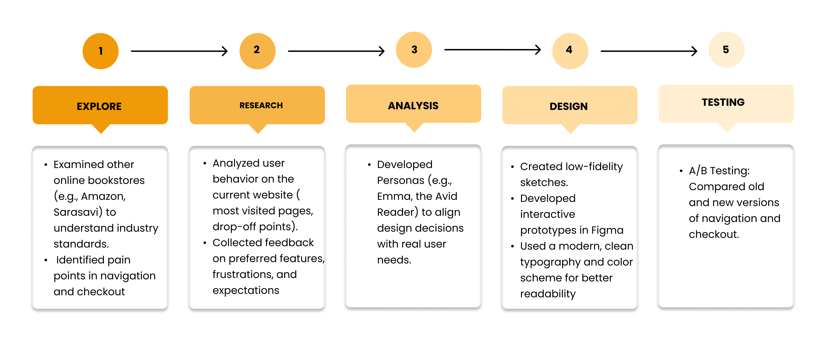
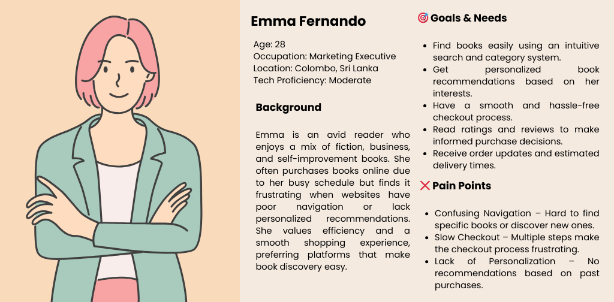
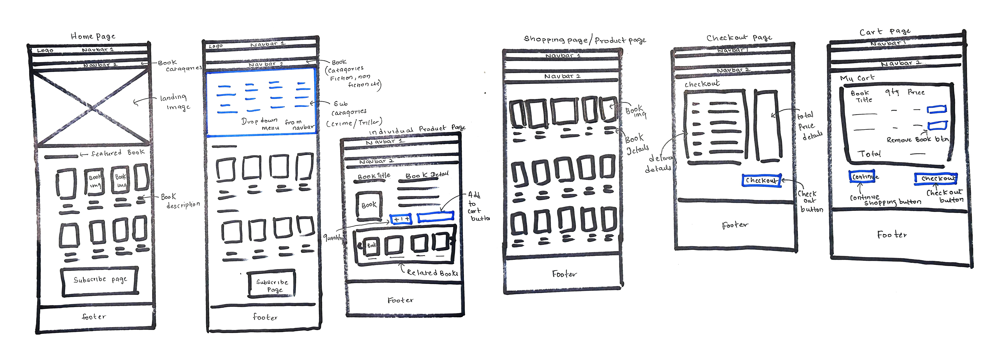

At-a-Glance
Project Type: Website Redesign
Focus: Enhancing user experience on the bookshop’s online platform.
Primary Goal: Improve navigation, simplify checkout, and modernize the visual design for better user engagement.
Timeline
4 Months
My Role
UI/UX Designer
Platform
Figma
Problem
1. Unclear Navigation: Users struggled to find books quickly due to poor categorization.
2. Overwhelming Homepage: A cluttered homepage with too many options.
3. Slow Checkout Process: The checkout experience was lengthy and confusing, leading to cart abandonment.
4. Outdated Visual Design: The website looked old-fashioned and didn’t appeal to modern book shoppers.
Solution
1. Simplified Navigation: Clear categories and a robust search functionality.
2. Streamlined Checkout: Reduced the number of steps to complete a purchase and simplified the forms.
3. Modern Visual Design: A clean and modern aesthetic to enhance the browsing experience.
4. Personalization: Personalized book recommendations based on user behavior.
Before diving into my design process, here’s a direct look at the redesign: a streamlined bookshop experience with a centralized dashboard featuring a home page, intuitive navbar with dropdowns, a shopping page, checkout, and a seamless cart system.
Process
Persona
User Journey Map

Paper First
Initial sketches and wireframes to define key features, such as simplified categories and product pages
From Paper to Digital
Using Figma, paper sketches were converted into wireframes and later into high-fidelity prototypes
Wireframes

High-fidelity

Design System
- Color Palette: Warm, inviting tones.
Warm & Earthy: The orange and green create a natural, cozy, and grounded feeling.
Soft & Inviting: The pinkish-cream adds a warm, neutral softness that avoids harsh contrasts.
Balanced Contrast: This harmony provides visual interest without being too aggressive, making it perfect for a bookshop website.
Split Complementary #8A9A5B (Olive Green) and #D35400 (Burnt Orange) are close to being split complements on the color wheel. #F4EAE0 (Soft Creamy Pink) acts as a neutral balancing color, making it a soft split complementary palette rather than a high-contrast one.
- Typography: Poppins is a clean, modern sans-serif font that balances elegance and readability
- Icons & Imagery: High-quality book cover previews and interactive buttons.
Design Changes

User Testing (A/B Testing for Redesign)
To evaluate the effectiveness of the redesigned bookshop website, i conducted A/B testing with 5+
users.
The goal was to compare the current design (Control) with the redesigned version (Variant) to
measure
improvements in user experience, engagement, and conversion.
Test Scenarios:
Homepage Layout: Testing user interaction with the new homepage design, including
product
recommendations, genres, and search options.
Product Page Navigation : Comparing how easily users could find books and product
details
on the new
design.
Checkout Flow : Evaluating whether the redesigned, simplified checkout process
reduced the time and
steps for completing a purchase.
Key Findings from A/B Testing:
- The new layout resulted in a 15% increase in time spent on the homepage and a 10% improvement in engagement with recommended books.
- users found the new layout easier to navigate and faster to find specific books.
- users experienced a 20% decrease in cart abandonment rates and a 25% increase in completed purchases compared to the Control group.
Key Takeaways
Minimalistic Design Improves Usability: The simplified design led to better user
navigation, with
clearer information and fewer distractions.
Personalized Suggestions Matter: Users preferred the curated book recommendations
on the homepage,
leading to more time spent browsing and higher engagement.
Faster Checkout Boosts Conversion Rates: The streamlined, guest-friendly checkout
significantly
improved the purchasing flow, reducing friction in the final stages of the user journey.
Final Thoughts
The A/B testing results demonstrate that the redesigned bookshop website increased user engagement, improved navigation, and enhanced the checkout experience, making book shopping easier and more enjoyable.
Future Improvements
Implement AI-Powered Recommendations: By leveraging machine learning, we can offer
even more
personalized book recommendations to further increase engagement.
Expand to Audiobooks & E-books: Introducing digital formats to cater to diverse
user preferences and
increase the product offering.